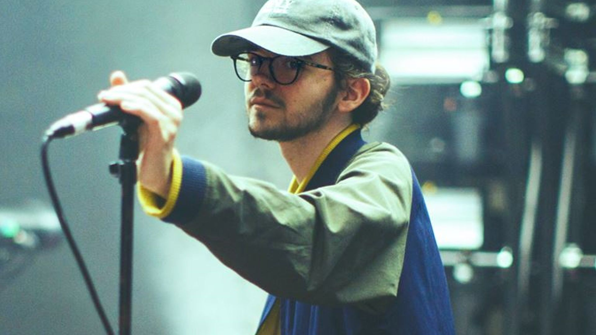
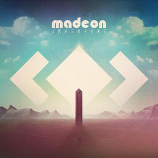
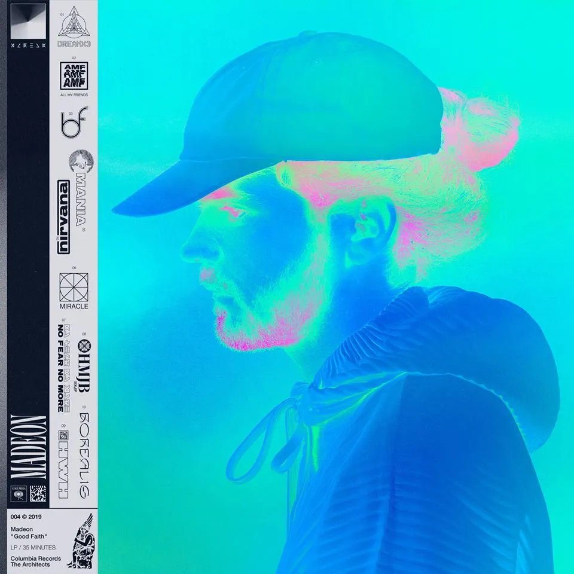

¿Quien es Madeon?
Hugo Pierre Leclercq, conocido como Madeon, es un DJ y productor francés que ha incursionado en géneros como el electro house, nu-disco y synthpop. Se dio a conocer a inicios de los años 2010 por sus remezclas a canciones de bandas como The Killers, Pendulum y Alphabeat y por su mashup subido a YouTube titulado "Pop Culture", en el cual incluye samples de 39 canciones mientras muestra su habilidad con el launchpad.
Albumes
Hasta la fecha (11/10/2022) Madeon ha lanzado 2 albumes los cuales son los siguientes:
| Año | Nombre | Imagen |
|---|---|---|
| 2015 | Adventure |  |
| 2019 | Good Faith |  |
Canciones
Madeon se dio a conocer gracias a un "mashup" de muchas canciones llamado Pop Culture:
En lo personal me gustan muchas de las canciones de Madeon, pero si me preguntaran cuales recomiendo diria que You're On (feat. Kyan) y All My Friends: